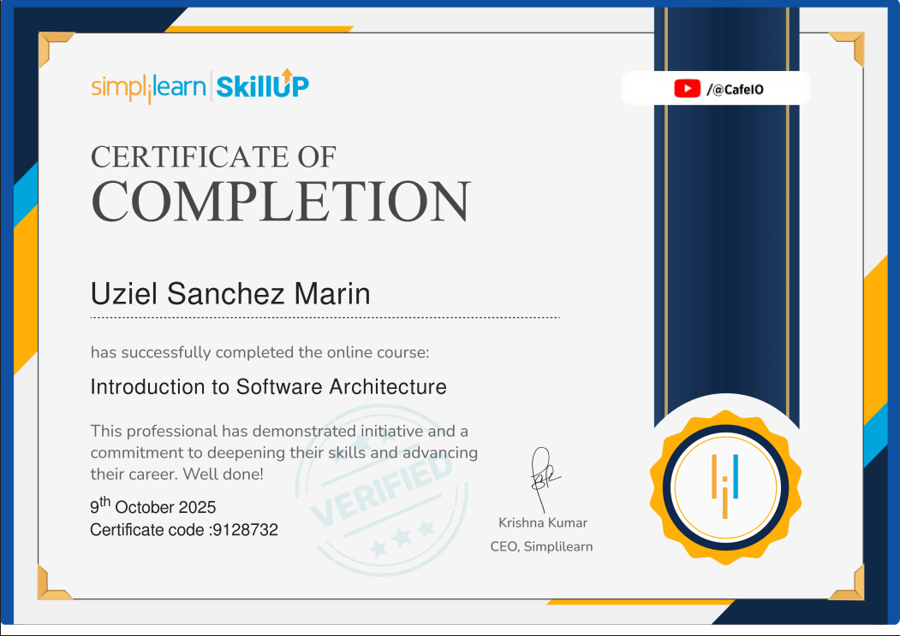
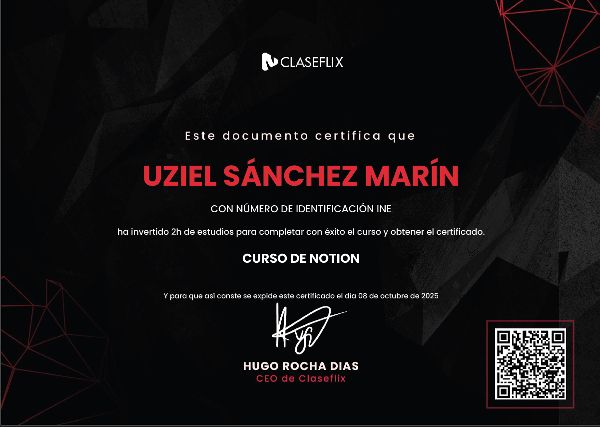
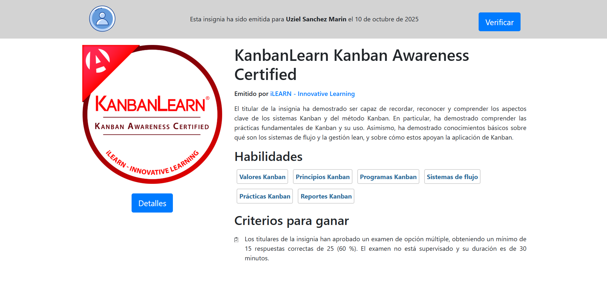
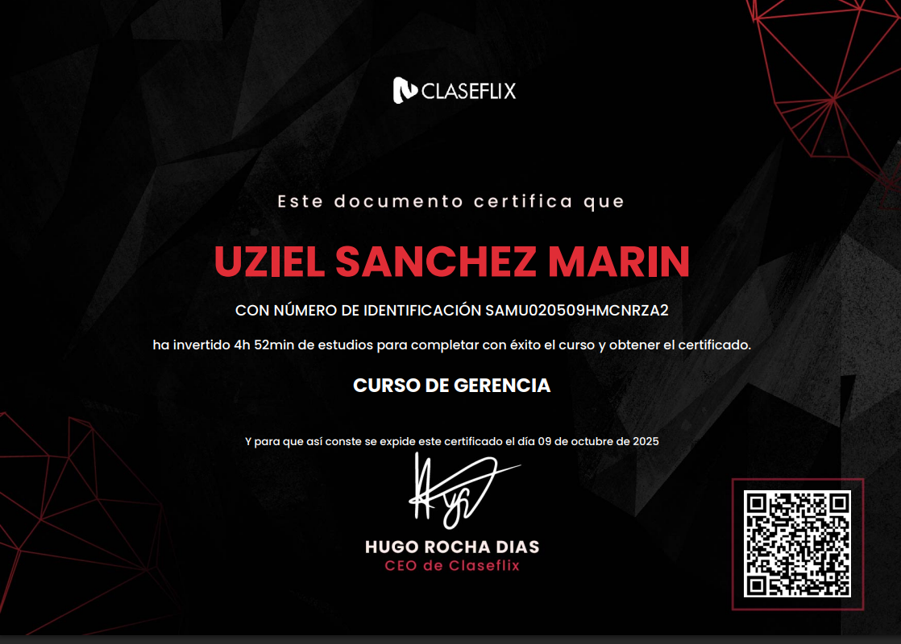

Formación Académica
- Ingeniería en Sistemas: Universidad Bancaria de México (2021-2025)
- Técnico en Programación: Universidad Bancaria de México (2016-2019)
Conocimientos
Aptitudes
- Trabajo en equipo
- Resolución de problemas
- Comunicación efectiva
- Adaptabilidad a entornos dinámicos
- Capacidad de análisis
- Enfoque en resultados
- Creatividad
- Gestión del tiempo
- Empatía
- Liderazgo
- Capacidad para resolver conflictos
- Trabajo en red (networking)
- Persuasión
- Planificación estratégica
- Gestión de recursos
- Priorización
- Manejo de proyectos
- Capacidad para delegar
- Pensamiento crítico
- Resolución de problemas complejos
- Toma de decisiones informada
- Aprendizaje rápido
- Innovación
- Dominio de herramientas tecnológicas
- Análisis de datos
- Redacción profesional
- Habilidades de presentación
- Conocimientos financieros
- Autonomía
- Resiliencia
Certificaciones
Certificación de SCRUM FUNDAMENTALS (2024)
Obtuve la Certificación Scrum Fundamentals, que me proporcionó una base sólida en la metodología ágil Scrum. Aprendí a gestionar proyectos de manera eficiente, trabajando en equipos colaborativos para entregar valor rápido y de forma continua.

AWS Educate: Introducción a la Nube 101
Insignia emitida por
Amazon Web Services (AWS) a través del programa
AWS Educate, reconociendo la finalización del
curso “Introducción a la Nube 101”. Este programa
proporciona las bases esenciales sobre el funcionamiento de la
computación en la nube, los principales servicios de AWS y las
mejores prácticas para la implementación de soluciones
escalables y seguras.

Certificación en Google Analytics
Certificación otorgada por Google que avala conocimientos en análisis de datos web, interpretación de métricas clave y optimización del rendimiento digital. Incluye el uso de informes, segmentación avanzada y configuración de eventos.

Santander Gestión de Proyectos y Fundamentos de Metodología Agile
Certificación emitida por Santander Open Academy al completar con éxito el curso sobre Gestión de Proyectos y Metodología Agile. Incluye fundamentos de Scrum, gestión adaptable, planificación iterativa y liderazgo de equipos en entornos ágiles.

Introduction to Python
Certificación que valida conocimientos fundamentales en Python, incluyendo variables, estructuras de control, funciones y manipulación de datos. Proporciona una base sólida para el desarrollo de software y análisis de datos.
Introduction to Software Architecture
Curso de Introduction to Software Architecture que enseña los fundamentos del diseño y estructura de sistemas de software. Explora patrones arquitectónicos, componentes, dependencias y buenas prácticas para construir aplicaciones escalables, seguras y mantenibles.

Fundamentos de la arquitectura de software y el diseño de sistemas
Certificación obtenida al completar el curso de Fundamentos de la arquitectura de software y el diseño de sistemas, centrado en el diseño estructurado de aplicaciones, patrones arquitectónicos, principios SOLID y buenas prácticas de escalabilidad, mantenibilidad y eficiencia en sistemas de software a si mismo realizar diagramas UML.

Desarrollo en la Nube
Insignia otorgada por Credmark por alcanzar un desempeño 10% superior en la evaluación de Desarrollo en la Nube, demostrando conocimientos avanzados en despliegue, infraestructura y servicios cloud modernos.
Certificación en Notion
Curso completo de Notion, una herramienta todo-en-uno para productividad, organización y gestión de proyectos. Aprende desde los fundamentos hasta el uso de bases de datos, widgets, plantillas personalizadas e inteligencia artificial para optimizar tu flujo de trabajo.
KanbanLearn Kanban Awareness Certified
Certificación de Kanban Awareness que valida conocimientos sobre los principios y prácticas fundamentales de Kanban. Incluye gestión visual de tareas, flujo de trabajo eficiente y mejora continua para optimizar procesos en proyectos y equipos ágiles.

Certificación Digital Marketing Fundamentals
Con la Certificación en Marketing, adquirí habilidades en estrategias digitales, gestión de campañas y análisis de mercado. Aprendí a conectar marcas con su audiencia a través de tácticas efectivas y orientadas a resultados.

Escuela de JavaScript 2025 - De cero a Master en JavaScript
La Escuela de JavaScript te lleva en una ruta completa para convertirte en FullStack Developer. Aprenderás desde los fundamentos del lenguaje hasta desarrollar sitios web interactivos y trabajar con JavaScript en el backend usando Node.js, Express y MongoDB.
Practical Database Course for Beginners
He completado este curso sobre bases de datos, donde aprendí a estructurar, gestionar y optimizar información utilizando SQL. También desarrollé habilidades en normalización y consultas avanzadas.

PHP Masterclass: Desarrollo de Proyectos Complejos y Avanzados
Certificación en desarrollo avanzado con PHP, donde trabajé en la creación de aplicaciones web escalables. Aprendí sobre patrones de diseño, seguridad y optimización de código.
.jpg)
Universidad Java - De Cero a Experto (+150 hrs)
El curso más completo de Java en Udemy, actualizado a 2025. Con más de 150 horas de contenido, cubre desde los fundamentos hasta tecnologías avanzadas como Spring Boot, Hibernate, Jakarta EE y desarrollo FullStack.

Programa de Maestría en Arquitectura de la Nube
Programa avanzado enfocado en
arquitectura de la nube con AWS, Azure y Google
Cloud. Incluye acceso a contenido oficial de
AWS, cupones de examen para
Microsoft Azure y certificación alineada con
estándares de arquitecto cloud profesional.
Duración: 4 meses — Inicio: 7
de noviembre de 2025

Dominar los conceptos básicos de jQuery
He completado esta certificación en jQuery, donde aprendí a manipular el DOM, crear animaciones, manejar eventos y realizar peticiones AJAX. También reforcé mis habilidades en JavaScript.

Learn Spring Modulith: Monolith to Microservices Seamlessly
Certificación enfocada en la transformación de arquitecturas monolíticas a microservicios con Spring Modulith y Spring Boot 3. Se abordaron temas como modularización de aplicaciones, integración con Spring Data JPA y despliegue con Docker y Kubernetes.

JavaFX Database Management System! Database Design In JavaFX
Este curso enseña cómo crear un sistema completo de gestión de bases de datos en JavaFX, incluyendo la creación de una página de inicio de sesión, conexión con bases de datos SQLite y la creación de una aplicación independiente.
Curso de Gerencia
Curso de Gerencia enfocado en el desarrollo de habilidades de liderazgo, planeación estratégica y toma de decisiones efectivas. Aprenderás a dirigir equipos, optimizar recursos y alcanzar objetivos organizacionales con una visión integral y orientada a resultados.

Universidad Angular - De Cero a Experto - Actualizado
Certificación otorgada por Udemy al completar el curso Universidad Angular - De Cero a Experto, enfocado en el desarrollo profesional de aplicaciones web modernas utilizando el framework Angular. Incluye fundamentos sólidos de TypeScript, componentes, servicios, módulos, directivas, enrutamiento avanzado, consumo de APIs REST, autenticación con JWT y despliegue de proyectos productivos. Ideal para consolidar habilidades en el ecosistema frontend con buenas prácticas y arquitectura escalable.

Curso de Certificación Profesional en Ingeniería de IA
Este curso brinda formación integral en el diseño, desarrollo e implementación de soluciones basadas en Inteligencia Artificial. Los participantes aprenderán a construir modelos de machine learning y deep learning, optimizar algoritmos, gestionar datos y aplicar técnicas avanzadas de IA para resolver problemas reales en distintos sectores.
Resumen de Competencias
Timeline Académico
Técnico en Programación
Universidad Bancaria de México – Fundamentos sólidos en programación y desarrollo de software.
Certificaciones en Bases de Datos
- SQL y Normalización
- MongoDB y NoSQL
- JPA / Hibernate
Ingeniería en Sistemas Computacionales
Universidad Bancaria de México – Especialización en desarrollo full-stack, arquitectura de sistemas y gestión de proyectos.
Certificaciones en Desarrollo Web y Arquitectura
- Java Full Stack
- JavaScript Avanzado
- Microservicios con Spring Boot
- APIs y Seguridad con JWT
Certificaciones en Marketing Digital y Metodologías Ágiles
- Google Analytics
- SEO y Estrategias Digitales
- SCRUM Fundamentals
- Gestión de Proyectos Ágiles
Inglés
Lenguajes de Programación
| Python | C# |
| C++ | Java |
| C | Octave |
| JavaScript | PHP |
| SQL | Kotlin |
Desarrollo y Programación
- Programación orientada a objetos
- Desarrollo de aplicaciones móviles (Android, iOS)
- Desarrollo web (HTML, CSS, JavaScript, React, Angular, Vue.js)
- Control de versiones (Git, GitHub, Bitbucket)
- Desarrollo de APIs RESTful
- Arquitectura de microservicios
- Principios de diseño (SOLID, MVC)

Manejo de Bases de Datos
- MySQL
- Oracle
- SQL Server
- PostgreSQL
- MongoDB
- Diseño y optimización de bases de datos